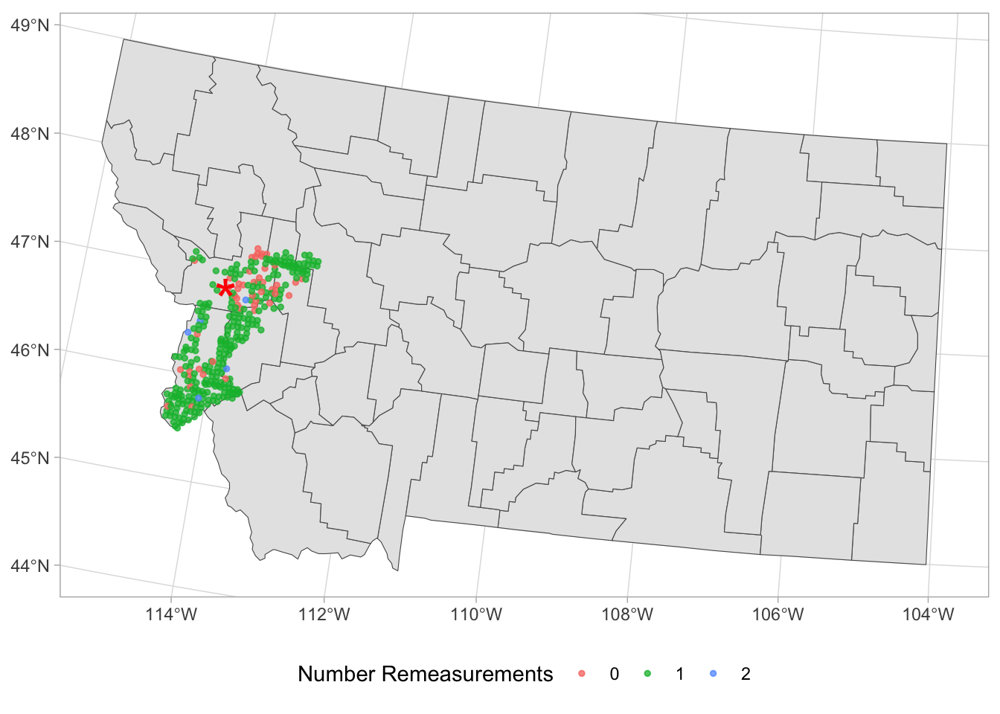
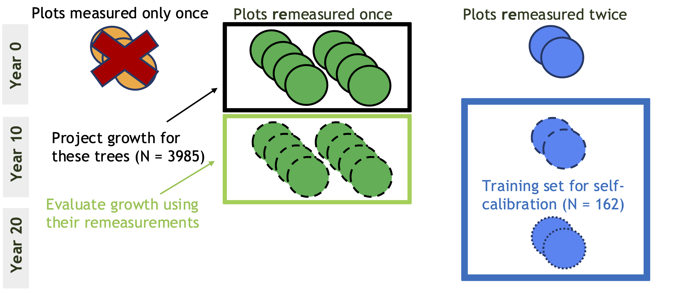
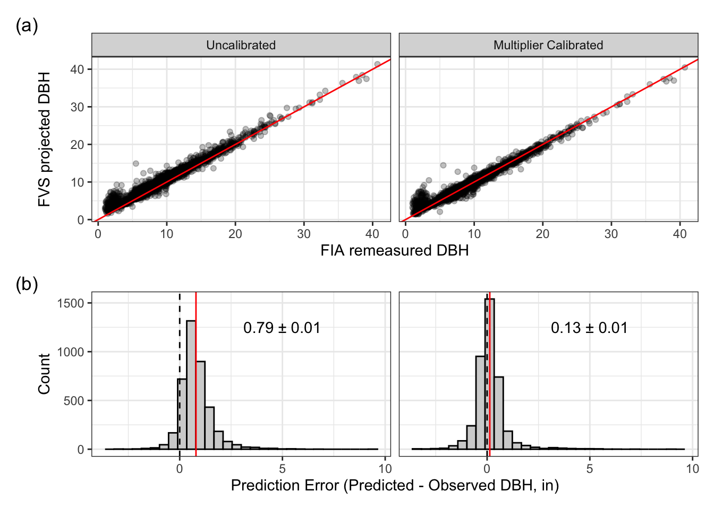

Public dataset-based calibration of the Forest Vegetation Simulator
Introduction
Forest growth and yield models are widely used to guide management strategies for forests across North America (Joo et al. 2025). However, inaccurate or biased models may provide an ineffective basis for projecting results of management. Therefore, it is essential to evaluate forest growth and yield models and ensure they appropriately reflect local conditions.
The United States Forest Service’s Forest Vegetation Simulator (FVS) is a forest growth and yield model that is used extensively across the United States (Crookston and Dixon 2005), yet many model evaluation studies have found inadequate model performance across several regional variants (Diaz et al. 2018; Cankaya and Radtke 2025; Ex and Smith 2014; Swann, Fried, and Gray 2025). Model performance may be improved by local calibration, which is a built-in routine that adjusts model coefficients based on tree growth data. However, tree growth data for calibration can be costly and time-consuming to collect or may be unavailable for previously measured plots. Therefore, one promising solution to this problem is to use tree growth information from external data sources to calibrate FVS to local conditions. One candidate dataset is the national Forest Inventory and Analysis National Forest Inventory, which contains hundreds of thousands of tree remeasurement records that can be used to estimate tree growth.
In this work, I evaluate the Inland Empire variant of FVS (FVS-IE) and assess the efficacy of using the United States Forest Inventory and Analysis (FIA) National Forest Inventory data (“FIA data”) to calibrate FVS-IE using both traditional hypothesis testing and equivalence testing approaches. I found that uncalibrated FVS-IE consistently over-predicted tree diameter over a 10-year projection period. Though calibration using independent FIA data reduced prediction errors, the reduction was insufficient to ensure that projected diameters were within Forest Service-specified tolerances for error.
Methods
Forest Vegetation Simulator-Inland Empire Variant (FVS-IE)
Overview
The Forest Vegetation Simulator (FVS) is an individual tree, distance-independent growth and yield model (Dixon 2025). That is, FVS models growth for individual trees (thus requiring a tree list as input), and it does not use spatial information to inform predictions; the measures of competition included in the model are distance-independent. “Variants” for FVS have been developed to cover the entire contiguous United States, with each variant representing a relatively large geographic region. The Inland Empire Variant (FVS-IE) covers western Montana (FVS Staff 2021).
FVS-IE uses diameter increment as the basis for all large tree (\(\geq\) 5” DBH) projections (i.e., height growth is based on projected diameter growth). The full model specification is in the FVS-IE variant overview (FVS Staff 2021). Briefly, FVS projects natural log of diameter increment as a linear combination of site characteristic variables, competition variables, DBH and vigor, and location variables. Coefficients of the linear combination are species specific. Conversely, FVS uses height increment as the basis for small tree (DBH < 5”) growth predictions. Again, full model specification is in the variant overview (FVS Staff 2021). FVS’ height increment model uses site variables, competition variables, location variables, species, and species-specific coefficients.
Built-in Calibration
FVS can calculate and apply scale factors to modify diameter and height increment predictions if the input tree lists contain previous diameter and height growth values. I refer to this feature as “self- calibration” throughout this paper. Briefly, FVS calculates these scale factors by (1) using current DBH with DBH growth values to obtain DBH at the previous measurement; (2) projecting trees using these previous measurements forward to the inventory year in the tree list; (3) comparing projections with provided tree list measurements; and (4) calculating the median difference between observed and projected DBH to use as the scale factor. Scale factors are calculated for each species and size class with at least 3 trees present.
Forest Inventory and Analysis Data
I used publicly available Forest Inventory and Analysis National Forest Inventory data (hereafter, “FIA data”) to evaluate FVS-IE performance. I downloaded all FIA data from the state of Montana from the FIA Datamart website, then selected a subset of FIA plots located in the Northern Rockies-Bitterroot Valley Ecoregion (code M332B; (Rudis 1999)) to use for all analysis (Figure 1). I focused on one ecoregion in order to ensure that plots used to calibrate FVS were ecologically similar to plots I used to evaluate FVS. I filtered these plots to those that had been installed after 2002 (i.e., that all followed the new FIA protocol), had at least 75% forest cover, were on publicly owned land, and were within the Inland Empire variant regional boundaries.
FIA plots are scheduled to be measured approximately every 10 years after their first inventory date. Since some plots were installed 2006 and 2007, not all plots have multiple remeasurements. The data used in this analysis consisted of 331 plots. Of these plots, 47 plots had been measured once, 279 plots had been remeasured once, and 5 plots had been remeasured twice. All plots were installed prior to 2010, so first remeasurement years varied from 2015-2020 and second remeasurement years were after 2020.
Study Design
I used number of remeasurements to temporally and spatially partition FIA data into disjoint evaluation and calibration sets (Figure 2). No trees were present in both evaluation and calibration sets because trees that had been remeasured exactly once form a disjoint set from trees that had been remeasured exactly twice. I designated the former set of trees (remeasured exactly once) as evaluation trees. I projected evaluation tree growth over the 10 year period from first measurement to first remeasurement using FVS-IE.
Because the goal of this study was to determine if external data could improve FVS-IE projections, I input tree measurements from first to second remeasurement into FVS-IE to calculate scale factors using built-in self-calibration (Figure 2). Thus, the data used for calibration were both spatially distinct (from a different set of plots) and temporally distinct (measured in a later period) from evaluation data. I then used FVS-IE to project evaluation trees from first measurement to first remeasurement, providing the calculated scale factors to FVS-IE using the READCORD and READCORR keywords (Dixon 2025). All other parameters were identical to the uncalibrated run.

Statistical Analysis
Because FVS is a diameter-increment based model, I evaluated prediction error for DBH, not height. For trees in the evaluation set, I used FVS (either uncalibrated or multiplier calibrated) to predict DBH at first remeasurement based on the DBH measurement at the first measurement. Then, I calculated prediction error as
\[ e_{\text{prediction}} = \widehat{\text{DBH}}_{\text{FVS projected}} - \text{DBH}_{\text{FIA remeasure}} \]
I used a dual equivalence testing and traditional null hypothesis testing approach to evaluate prediction error because it allowed me to formally test two key hypotheses. Under the equivalence testing (Wellek 2010; A. P. Robinson and Froese 2004), the hypotheses are:
\(H_{0, \text{eq}}:\) There is a meaningful difference between observations and predictions.
\(H_{A, \text{eq}}:\) There is no meaningful difference between observations and predictions (i.e., they are equivalent).
Thus, sufficient evidence to reject the null hypothesis indicates support for equivalence. Failure to reject the null hypothesis, however, does not prove that there is a meaningful difference between observations and predictions: we cannot prove the assumption the test is based on. Therefore, I supplemented the equivalence test with a traditional null hypothesis significance test with hypotheses:
\(H_{0, \text{NHST}}:\) There is no difference between observations and predictions.
\(H_{A, \text{NHST}}:\) The difference between observations and predictions is non-zero.
Under this framework, failure to reject the null hypothesis does not prove that there is no difference between observations and predictions (again, that is the test’s assumption). Sufficient evidence to reject the null hypothesis indicates support for non-equivalence.
Equivalence Testing
To test if projected DBH was meaningfully different from observed DBH, I used a two one-sided test (TOST; (Wellek 2010; A. P. Robinson and Froese 2004)).
First, I determined a tolerance level \(\epsilon\) such that projected DBH was considered “equivalent” to measured DBH iff
\[ \widehat{\text{DBH}}_{FVS} \in [\text{DBH}_{\text{FIA measured}}-\epsilon, \, \text{DBH}_{\text{FIA measured}}+\epsilon] \]
I refer to the interval on the right-hand side of the above as the “equivalence interval.” I established tolerance levels using FIA’s DBH measurement error tolerance guidelines of \(\pm\) 0.1” per 20” DBH (“Forest Inventory and Analysis National Core Field Guide for the Nationwide Forest Inventory Version 9.4” 2024). Because the trees in this study had DBH ranging from 1” to 40”, I defined two DBH groups ([1”, 20”] and (20”, 41]) and ran the following procedure on each DBH group and its associated tolerance (\(\pm\) 0.1” and \(\pm\) 0.2”, respectively).
After establishing an equivalence interval, mean, standard deviation, and standard error of prediction errors were calculated. I additionally calculated a non-centrality parameter \(\psi^2 = N*\epsilon_\text{adj}^2\) with standard deviation-adjusted tolerance \(\epsilon_{\text{adj}} = \epsilon/\hat \sigma^2\). Then the cutoff value for an \(\alpha\) = 0.05 test is given as the 0.05-quantile of an F-distribution with numerator degrees of freedom = 1, denominator degrees of freedom = \(N\)-1, and non-centrality parameter \(\psi^2\) (Wellek 2010). Finally, the test statistic is calculated as a t-value: \(t\) = error mean/error standard deviation. A test statistic was lower than the cutoff value is considered sufficient evidence to reject the null hypothesis of dissimilarity.
Traditional Null Hypothesis Significance Testing
To test the hypothesis that projected DBH was different from observed DBH, I used a two-sided t-test to assess if mean error was significantly different from 0 at the \(\alpha\) = 0.05 level.
I additionally tested the hypothesis that uncalibrated prediction error was different from multiplier calibrated prediction error using a two-sided paired t-test.
Software
I conducted all analyses in R version 4.4.3. I used DBI version 1.2.3 (R Special Interest Group on Databases (R-SIG-DB), Wickham, and Müller 2024) and RSQLite version 2.4.3 for working with FIA data in SQL tables and rFVS to run FVS (US Forest Service 2023); equivalence version 0.8.2 (A. Robinson 2025) for equivalence testing; ggplot2 version 4.0.0 (Wickham 2016) and patchwork version 1.3.2 for plotting; terra version 1.8.70 (Hijmans 2025), sf version 1.0.19 (Pebesma 2018; Pebesma and Bivand 2023), and usmap version 0.7.1 (Di Lorenzo 2024) for mapping; dplyr version 1.1.4 (Wickham et al. 2023) and stringr version 1.5.1 (Wickham 2023) for data wrangling; and here version 1.0.2 for project file management.
Results
Uncalibrated FVS-IE projected DBH after 10 years was consistently greater than remeasured DBH (Figure 3 a, left). For both DBH groups, there was insufficient evidence to support equivalence within the given tolerances of \(\pm\) 0.1” for the smaller DBH group and \(\pm\) 0.2” for the larger group (Paired TOST; p = 1 for both groups). Moreover, mean uncalibrated prediction error was greater than 0 (Figure 3 b, left; mean \(\pm\) se = 0.79+0.01; two-sided t-test: t = 63.983, p < 2.2x10-16).
Multiplier calibration reduced prediction error relative to uncalibrated predictions by 0.66in (Figure 3 a; two-sided t-test: t = 74.391, p < 2.2x10-16). However, there was still insufficient evidence to support equivalence for either DBH group (Paired TOST; p = 0.99 for small DBH group, p = 0.92 for large DBH group) and mean multiplier-calibrated prediction error was greater than 0 (Figure 3 b, right; mean \(\pm\) se = 0.13 \(\pm\) 0.01; two-sided t-test: t = 10.686, p 2.2x10-16).

Discussion
Code
Scripts sourced at the beginning of the code are available on my GitHub: https://github.com/sprachan/fvs-code/tree/main/fia_calib.
# Packages --------------------------------------------------------------------------
library(dplyr) # data wrangling
library(ggplot2) # plotting
theme_set(theme_bw()) # default plot theme
library(patchwork) # composing plots into figures
library(usmap) # montana state outline reference
library(terra) # spatial data tools
library(sf) # spatial data tools
library(here) # helps avoid .qmd's default behavior of wd = qmd directory
# Functions and file paths -----------------------------------------------------------
source(here('00_functions.R'))
project <- FALSE # don't want to actually project in FVS
if(project){
source(here('01_setup.R')) # needed for running FVS
}else{
fvs_ready <- here('data', 'fvs_ready')
fvs_runs <- here('data', 'fvs_runFiles')
sim_out <- here('data', 'sim_outputs')
fia_sql <- here('data', 'fia', 'SQLite_FIADB_MT.db')
}
# Data -------------------------------------------------------------------------------
## Species table, for reference
species_tab <- fvs_spcd(fia_sql)
## FIA Data ----
standInit <- readRDS(file.path(fvs_ready, 'FVSstandInitAll.rds'))
treeInit <- readRDS(file.path(fvs_ready, 'FVStreeInitAll.rds'))
# filter to Inland Empire only
standInitIE <- filter(standInit,
VARIANT == 'IE',
substr(ECOREGION, 1, 5) == 'M332B') |>
arrange(PID, INV_YEAR) |>
group_by(PID) |>
mutate(
# REMeasurement code
REM_CD = case_when(INV_YEAR == min(INV_YEAR) ~ 0, # first measurement
n() == 2 ~ 1, # first remeasurement
INV_YEAR == max(INV_YEAR) ~ 2, # second remeasurement
INV_YEAR != max(INV_YEAR) ~ 1, # first remeasurement
.default = NA),
# Number of REMeasurements
N_REM = max(REM_CD),
# string padding for FVS compatibility
FOREST = stringr::str_pad(FOREST,
width = 2,
pad = '0',
side = 'left')) |>
ungroup()
treeInitIE <- treeInit[treeInit$STAND_CN %in% standInitIE$STAND_CN,] |>
dplyr::left_join(select(standInitIE, STAND_CN, INV_YEAR, REM_CD, N_REM),
by = dplyr::join_by(STAND_CN))
## FVS runs ----
####### CODE GENERATING THESE OUTPUTS IS AT THE BOTTOM OF ALL THIS CODE #######
# Uncalibrated
uncalib_tr <- readRDS(here(sim_out, 'uncalib.RData')) |>
dplyr::select(age, species, dbh, TUID, year) |>
dplyr::rename(fvs_cd = species, fvs_age = age, fvs_dbh = dbh) |>
dplyr::left_join(select(species_tab, fvs_cd, fia_cd),
by = join_by(fvs_cd))
# Multiplier calibrated
mult_tr <- readRDS(here(sim_out, 'mult_trees.RData')) |>
dplyr::select(age, species, dbh, TUID, year) |>
dplyr::rename(fvs_cd = species, fvs_age = age, fvs_dbh = dbh) |>
dplyr::left_join(select(species_tab, fvs_cd, fia_cd),
by = join_by(fvs_cd))
# Study species: those with enough data for use in self calibration
study_species <-readRDS(here(sim_out, 'selfcalib_calbstat.RData'))$SpeciesFIA |>
unique() |>
as.numeric()
# Map FIA plots ----------------------------------------------------------------------
mt_map <- us_map(regions = 'county', include = 'Montana') # state outline
stand_locs <- vect(standInitIE, geom = c('LONGITUDE', 'LATITUDE'))
# FIA documentation tells us that they use NAD83 datum
crs(stand_locs) <- '+proj=longlat +ellps=GRS80 +towgs84=0,0,0,0,0,0,0 +no_defs +type=crs'
missoula_coords <- data.frame(LATITUDE = 46.87215,
LONGITUDE = -113.994) |>
terra::vect(geom = c('LONGITUDE', 'LATITUDE'))
crs(missoula_coords) <- 'epsg:4326' # WGS84
missoula_coords <- project(missoula_coords, crs(mt_map)) |>
st_as_sf()
stand_locs <- project(stand_locs, crs(mt_map)) |> # project stands to montana
st_as_sf()
stand_map <- ggplot()+
geom_sf(data = mt_map)+
# don't want to plot the same plot on top of itself a bunch of times
geom_sf(data = distinct(stand_locs, PID, .keep_all = TRUE), aes(color = factor(N_REM)), alpha = 0.75, size = 1)+
geom_sf(data = missoula_coords, pch = '*', col = 'red', lwd = 5, size = 10)+
theme_light()+
labs(color = 'Number Remeasurements')+
theme(legend.position = 'bottom')
# Connect tree list info with stand info ---------------------------------------------
joiner <- treeInitIE |>
dplyr::select(AGE, DIAMETER, TUID, PID, STAND_CN, REM_CD) |>
# need to get inventory year from stand info
dplyr::left_join(dplyr::select(standInit,
STAND_CN, INV_YEAR),
by = dplyr::join_by(STAND_CN)) |>
dplyr::rename(fia_age = AGE, fia_dbh = DIAMETER, year = INV_YEAR)
# one comparison dataframe for each run
uncalib_comp <- dplyr::left_join(uncalib_tr, joiner,
by = dplyr::join_by(TUID, year)) |>
dplyr::filter(fia_cd %in% study_species,
fia_dbh > 0.1) |>
dplyr::mutate(model = 'uncalibrated',
dbh_group = cut(fia_dbh, breaks = c(1, 21, 41),
right = FALSE, include.lowest = TRUE,
labels = FALSE),
group_name = dplyr::case_when(dbh_group == 1 ~ 'DBH Group 1',
dbh_group == 2 ~ 'DBH Group 2',
.default = NA),
tolerance = 0.1*dbh_group)
mult_comp <- dplyr::left_join(mult_tr, joiner,
by = dplyr::join_by(TUID, year)) |>
dplyr::filter(fia_cd %in% study_species,
fia_dbh > 0.1) |>
dplyr::mutate(model = 'multiplier',
dbh_group = cut(fia_dbh, breaks = c(1, 21, 41),
right = FALSE, include.lowest = TRUE,
labels = FALSE),
group_name = dplyr::case_when(dbh_group == 1 ~ 'DBH Group 1',
dbh_group == 2 ~ 'DBH Group 2',
.default = NA),
tolerance = 0.1*dbh_group)
# overall comparison dataframe
comp <- rbind(uncalib_comp, mult_comp) |>
dplyr::mutate(prediction_err = fvs_dbh-fia_dbh)
# version of comparison dataframe that only includes projection year
comp_rem <- dplyr::filter(comp, REM_CD == 1)
comp_rem_summ <- comp_rem |>
group_by(model) |>
summarize(err_mean = mean(prediction_err),
n = n(),
se = sd(prediction_err)/sqrt(n()))
# sanity check
check <- dplyr::filter(uncalib_comp, REM_CD == 0)
plot(check$fvs_dbh, check$fia_dbh, pch = 20, col = rgb(0, 0, 0, 0.5),
main = 'Uncalibrated sanity check')
abline(coef = c(0, 1), col = 'red')
check <- dplyr::filter(mult_comp, REM_CD == 0)
plot(check$fvs_dbh, check$fia_dbh, pch = 20, col = rgb(0, 0, 0, 0.5),
main = 'Adjusted multipliers sanity check')
abline(coef = c(0, 1), col = 'red')
# Visualize Errors -------------------------------------------------------------------
# Plot predictions vs observations
pred_obs_plt <- comp_rem |>
mutate(model_clean = case_when(model == 'uncalibrated' ~ 'Uncalibrated',
model == 'multiplier' ~ 'Multiplier Calibrated'),
model_clean = factor(model_clean, levels = c('Uncalibrated',
'Multiplier Calibrated'),
ordered = TRUE)) |>
ggplot(aes(x = fia_dbh, y = fvs_dbh))+
geom_point(alpha = 0.25)+
facet_wrap(facets = vars(factor(model_clean)))+
geom_abline(aes(intercept = 0, slope = 1), col = 'red')+
labs(x = 'FIA remeasured DBH', y = 'FVS projected DBH')
# Error distribution
err_hist <- ggplot()+
geom_histogram(data = comp_rem,
aes(x = prediction_err),
bins = 30, col = 'black', fill = 'lightgrey')+
geom_vline(data = comp_rem_summ,
aes(xintercept = err_mean),
col = 'red')+
geom_vline(xintercept = 0, lty = 'dashed')+
facet_wrap(facets = vars(factor(model,
levels = c('uncalibrated', 'multiplier'),
labels = c(uncalibrated = 'Uncalibrated',
multiplier = 'Multiplier Calibrated'),
ordered = TRUE)),
nrow = 1)+
geom_text(data = comp_rem_summ,
aes(label = paste(round(err_mean, 2),
'\u00B1',
round(se, 2)),
y = 1250, x = 5))+
labs(x = 'Prediction Error (Predicted - Observed DBH, in)',
y = 'Count')
# Equivalence testing ----------------------------------------------------------
group1 <- filter(comp_rem, dbh_group == 1)
group2 <- filter(comp_rem, dbh_group == 2)
# Uncalibrated
g1_uc_tost <- equivalence::tost(group1$fvs_dbh[group1$model == 'uncalibrated'],
group1$fia_dbh[group1$model == 'uncalibrated'],
epsilon = 0.1,
paired = TRUE,
alpha = 0.05)
g2_uc_tost <- equivalence::tost(group2$fvs_dbh[group2$model == 'uncalibrated'],
group2$fia_dbh[group2$model == 'uncalibrated'],
epsilon = 0.2,
paired = TRUE,
alpha = 0.05)
# Multiplier
g1_mult_tost <- equivalence::tost(group1$fvs_dbh[group1$model == 'multiplier'],
group1$fia_dbh[group1$model == 'multiplier'],
epsilon = 0.1,
paired = TRUE,
alpha = 0.05)
g2_mult_tost <- equivalence::tost(group2$fvs_dbh[group2$model == 'multiplier'],
group2$fia_dbh[group2$model == 'multiplier'],
epsilon = 0.2,
paired = TRUE,
alpha = 0.05)
# NHST ------------------------------------------------------------------------
# Testing for difference from 0
uc_diff_t <- t.test(comp_rem$prediction_err[comp_rem$model == 'uncalibrated'])
mult_diff_t <- t.test(comp_rem$prediction_err[comp_rem$model == 'multiplier'])
# Testing for difference from each other
uc_mult_t <- t.test(comp_rem$prediction_err[comp_rem$model == 'uncalibrated'],
comp_rem$prediction_err[comp_rem$model == 'multiplier'],
paired = TRUE)
########################### CODE TO RUN FVS ###########################
# don't actually want to run while knitting because requires FVS build and
#> takes a long time, so use project = FALSE
project <- FALSE
if(project){
# Uncalibrated Run -----------------------------------------------------------------
## Tree and Stand lists ----
t0_stands <- filter(standInitIE, N_REM == 1, REM_CD == 0) |>
dplyr::select(-N_REM, -REM_CD) |>
as.data.frame()
t0_trees <- dplyr::filter(treeInitIE, STAND_CN %in% t0_stands$STAND_CN) |>
clean_FIA_treeList(standinfo = standInitIE)
## Run projection ----
# make directory. Use date and time to help with ID later
dt <- paste0('uc_', format(Sys.Date(), '%b%d%Y'), '_',
format(Sys.time(), '%H.%M'), collapse = '')
outdir <- file.path(fvs_runs, dt)
dir.create(outdir)
filenames <- rep(NA, nrow(t0_stands))
# projection parameters
num_years <- 11 # number of years into the future to project
use_tripling <- FALSE
use_calibration <- FALSE
use_regenmodel <- FALSE
# FVS will overwrite each stand, so we need storage
uncalib_proj <- list()
uncalib_proj$treelist <- NULL
uncalib_proj$summary <- NULL
for(i in 1:nrow(t0_stands)){
st <- t0_stands[i,]
tr <- t0_trees[t0_trees$STAND_CN == st$STAND_CN,] |>
as.data.frame()
# check if there are eligible trees to simulate
if(sum(tr$HISTORY %in% 6:9) == nrow(tr)){
cat('Skipping stand ', st$STAND_CN, ' (PID ', st$PID, ') \n', sep = '')
}else{
# run simulation
tr$fvs.TREE_ID <- 1:nrow(tr)
rFVS::fvsLoad("FVSie", fvs_bin)
filenames[i] <- write.FVSfiles(trees=tr,
stand=st,
years_out=num_years,
calibrate=use_calibration,
triple=use_tripling,
add_regen=use_regenmodel,
outdir = outdir,
file_prefix = paste0('uncalib_stand', i),
STDIDENT = paste0('UNCALBST', i))
# grow the stand
fvsSetCmdLine(paste0("--keywordfile=",filenames[i],".key"))
y <- c(st$INV_YEAR, st$INV_YEAR+10)
# get grown tree list
fvs_output <- fvsInteractRun(AfterEM1='fetchTrees()',
SimEnd=fvsGetSummary)
names(fvs_output)
# 2007 tree list in element 1, just to check
tl1 <- fvs_output[[1]]$AfterEM1 |>
dplyr::left_join(select(tr, fvs.TREE_ID, TUID, PID),
by = dplyr::join_by(id == fvs.TREE_ID))
nrow(tl1)
# 2017 tree list output in element 2. use left_join to match up with TUID
tl2 <- fvs_output[[2]]$AfterEM1 |>
dplyr::left_join(select(tr, fvs.TREE_ID, TUID, PID),
by = join_by(id == fvs.TREE_ID))
nrow(tl2)
tl <- rbind(tl1, tl2)
nrow(tl)
uncalib_proj$treelist <- rbind(uncalib_proj$treelist, tl)
# similar with plot summaries
uncalib_proj$summary <- rbind(uncalib_proj$summary,
cbind(fvs_output[[length(fvs_output)]],
data.frame(PID = st$PID)))
}
rFVS::fvsLoad("FVSie", fvs_bin)
}
## Save outputs ----
saveRDS(uncalib_proj$treelist, file = here(sim_outputs, 'uncalib.RData'))
saveRDS(uncalib_proj$summary, file = here(sim_outputs, 'uncalibsummary.RData'))
# Run to calculate scale multipliers using self-calibration -------------------------
## Tree and stand lists ----
t2_stands <- dplyr::filter(standInitIE, REM_CD == 2) |>
dplyr::arrange(PID) |>
dplyr::mutate(FOREST = as.numeric(FOREST)) |>
as.data.frame()
nrow(t2_stands) # only 5 plot IDs
# checked by hand and saw that PIDs match up
t2_stands$REM_INT <- plot_rems$INV_YEAR.x - plot_rems$INV_YEAR.y
t2_trees <- filter(treeInitIE, STAND_CN %in% t2_stands$STAND_CN) |>
clean_FIA_treeList(standinfo = standInitIE) |>
as.data.frame()
## FVS run ----
# make directory. Use date and time to help with ID later
dt <- paste0('sc_', format(Sys.Date(), '%b%d%Y'), '_',
format(Sys.time(), '%H.%M'), collapse = '')
outdir <- file.path(fvs_runs, dt)
dir.create(outdir)
filenames <- rep(NA, nrow(t2_stands))
# projection parameters
num_years <- 11 # number of years into the future to project
use_tripling <- FALSE
use_calibration <- TRUE
use_regenmodel <- FALSE
# FVS will overwrite each stand, so we need storage
selfcalib_proj <- list()
selfcalib_proj$treelist <- NULL
selfcalib_proj$summary <- NULL
selfcalib_proj$calibstats <- NULL
for(i in 1:nrow(t2_stands)){
st <- t2_stands[i,]
tr <- t2_trees[t2_trees$STAND_CN == st$STAND_CN,] |>
as.data.frame()
if(sum(tr$HISTORY %in% 6:9) == nrow(tr)){
cat('Skipping stand ', st$STAND_CN, ' (PID ', st$PID, ') \n', sep = '')
}else{
tr$fvs.TREE_ID <- 1:nrow(tr)
rFVS::fvsLoad("FVSie", fvs_bin)
filenames[i] <- write.FVSfiles(trees=tr,
stand=st,
years_out=num_years,
calibrate=use_calibration,
triple=use_tripling,
add_regen=use_regenmodel,
file_prefix = paste0('selfcalib_stand', i),
outdir = outdir,
STDIDENT = paste0('SELFCALB', i))
# grow the stand
fvsSetCmdLine(paste0("--keywordfile=",filenames[i],".key"))
y <- c(st$INV_YEAR, st$INV_YEAR+10)
# get grown tree list
fvs_output <- fvsInteractRun(AfterEM1='fetchTrees()',
SimEnd=fvsGetSummary)
names(fvs_output)
# 2007 tree list in element 1, just to check
tl1 <- fvs_output[[1]]$AfterEM1 |>
dplyr::left_join(select(tr, fvs.TREE_ID, TUID, PID),
by = dplyr::join_by(id == fvs.TREE_ID))
nrow(tl1)
# 2017 tree list output in element 2. use left_join to match up with TUID
tl2 <- fvs_output[[2]]$AfterEM1 |>
dplyr::left_join(select(tr, fvs.TREE_ID, TUID, PID),
by = join_by(id == fvs.TREE_ID))
nrow(tl2)
tl <- rbind(tl1, tl2)
nrow(tl)
selfcalib_proj$treelist <- rbind(selfcalib_proj$treelist, tl)
# similar with plot summaries
selfcalib_proj$summary <- rbind(selfcalib_proj$summary,
cbind(fvs_output[[length(fvs_output)]],
data.frame(PID = st$PID)))
# Get calibration statistics
conn <- DBI::dbConnect(RSQLite::SQLite(), 'FVSOut.db')
calib <- dplyr::tbl(conn, 'FVS_CalibStats') |>
dplyr::collect()
DBI::dbDisconnect(conn)
selfcalib_proj$calibstats <- rbind(selfcalib_proj$calibstats, calib)
remove(conn)
file.remove('FVSOut.db')
}
rFVS::fvsLoad("FVSie", fvs_bin)
}
## Save outputs ----
saveRDS(selfcalib_proj$treelist,
file = here(sim_out, 'selfcalib_trees.RData'))
saveRDS(selfcalib_proj$summary,
file = here(sim_out, 'selfcalib_summary.RData'))
saveRDS(selfcalib_proj$calibstats,
file = here(sim_out, 'selfcalib_calbstat.RData'))
# Run using multipliers ----------------------------------------------------------
## Get calibration statistics AKA multiplier ----
calib_stats <- readRDS(file.path(sim_out, 'selfcalib_calbstat.RData'))
str(calib_stats)
mults <- dplyr::select(calib_stats,
TreeSize,
SpeciesPLANTS,
SpeciesFIA,
NumTrees,
ScaleFactor,
ReadCorMult) |>
dplyr::summarize(.by = c(TreeSize, SpeciesPLANTS, SpeciesFIA),
n = sum(NumTrees),
avgScaleFactor = mean(ScaleFactor, na.rm = TRUE),
avgReadCorMult = mean(ReadCorMult, na.rm = TRUE))
# Separate large and small tree multipliers
ltdg_mults <- dplyr::filter(mults, TreeSize == 'LG') |>
dplyr::full_join(select(species_tab, fvs_cd, sp_abb),
by = join_by(SpeciesPLANTS == sp_abb)) |>
arrange(fvs_cd) |>
dplyr::mutate(READCORD = stringr::str_pad(
ifelse(is.na(avgReadCorMult),
# default multiplier is 1.0
'1.00',
round(avgReadCorMult, 2)),
width = 10,
pad = ' ',
side = 'left')
)
sthg_mults <- dplyr::filter(mults, TreeSize == 'SM') |>
dplyr::full_join(select(species_tab, fvs_cd, sp_abb),
by = join_by(SpeciesPLANTS == sp_abb)) |>
arrange(fvs_cd) |>
dplyr::mutate(READCORR = stringr::str_pad(
ifelse(is.na(avgReadCorMult)|avgReadCorMult == 1,
# default multiplier is 1.0
'1.00',
round(avgReadCorMult, 2)),
width = 10,
pad = ' ',
side = 'left')
)
## Run FVS Projection ----
dt <- paste0('mult_', format(Sys.Date(), '%b%d%Y'), '_', format(Sys.time(), '%H.%M'), collapse = '')
outdir <- file.path(fvs_runs, dt)
dir.create(outdir)
filenames <- rep(NA, nrow(t0_stands))
# projection parameters
num_years <- 11 # number of years into the future to project
use_tripling <- FALSE
use_calibration <- FALSE # calibration OFF. This should be redundant because these trees don't have defined HTG/DG columns.
use_regenmodel <- FALSE
# FVS will overwrite each stand, so we need storage
mult_proj <- list()
mult_proj$treelist <- NULL
mult_proj$summary <- NULL
for(i in 1:nrow(t0_stands)){
st <- t0_stands[i,]
tr <- t0_trees |>
dplyr::filter(STAND_CN == st$STAND_CN,
SPECIES %in% as.numeric(mults$SpeciesFIA)) |>
as.data.frame()
if((sum(tr$HISTORY %in% 6:9) == nrow(tr))|(nrow(tr) == 0)){
# warn if there are no live trees to project
cat('Skipping stand ', st$STAND_CN, ' (PID ', st$PID, ') \n', sep = '')
}else{
tr$fvs.TREE_ID <- 1:nrow(tr)
rFVS::fvsLoad("FVSie", fvs_bin)
filenames[i] <- write.FVSfiles(trees=tr,
stand=st,
years_out=num_years,
calibrate=use_calibration,
triple=use_tripling,
add_regen=use_regenmodel,
file_prefix = paste0('mult_stand', i),
outdir = outdir,
STDIDENT = paste0('MULT', i),
READCORD = ltdg_mults$READCORD,
READCORR = sthg_mults$READCORR)
# grow the stand
fvsSetCmdLine(paste0("--keywordfile=",filenames[i],".key"))
y <- c(st$INV_YEAR, st$INV_YEAR+10)
# get grown tree list
fvs_output <- fvsInteractRun(AfterEM1='fetchTrees()',
SimEnd=fvsGetSummary)
names(fvs_output)
# 2007 tree list in element 1, just to check
tl1 <- fvs_output[[1]]$AfterEM1 |>
dplyr::left_join(select(tr, fvs.TREE_ID, TUID, PID),
by = dplyr::join_by(id == fvs.TREE_ID))
nrow(tl1)
# 2017 tree list output in element 2. use left_join to match up with TUID
tl2 <- fvs_output[[2]]$AfterEM1 |>
dplyr::left_join(select(tr, fvs.TREE_ID, TUID, PID),
by = join_by(id == fvs.TREE_ID))
nrow(tl2)
tl <- rbind(tl1, tl2)
nrow(tl)
mult_proj$treelist <- rbind(mult_proj$treelist, tl)
# similar with plot summaries
mult_proj$summary <- rbind(mult_proj$summary,
cbind(fvs_output[[length(fvs_output)]],
data.frame(PID = st$PID)))
}
rFVS::fvsLoad("FVSie", fvs_bin)
}
## Save results ----
saveRDS(mult_proj$treelist, file.path(sim_out, 'mult_trees.RData'))
saveRDS(mult_proj$summary, file.path(sim_out, 'mult_summary.RData'))
}
print(stand_map)
pred_obs_plt/(err_hist+theme(strip.background = element_blank(),
strip.text = element_blank()))+
plot_annotation(tag_levels = 'a', tag_prefix = '(', tag_suffix = ')')References
Cankaya, Ergin C, and Philip J. Radtke. 2025. “Evaluating Local Calibration Methods for Improving Diameter Growth Predictions in the Southern Variant, Forest Vegetation Simulator (FVS-Sn).” Forest Science.
Crookston, Nicholas L., and Gary E. Dixon. 2005. “The Forest Vegetation Simulator: A Review of Its Structure, Content, and Applications.” Computers and Electronics in Agriculture 49 (1): 60–80. https://doi.org/10.1016/j.compag.2005.02.003.
Di Lorenzo, Paolo. 2024. Usmap: US Maps Invluding Alaska and Hawaii. https://CRAN.R-project.org/package=usmap.
Diaz, David D., Sara Loreno, Gregory J. Ettl, and Brent Davies. 2018. “Tradeoffs in Timber, Carbon, and Cash Flow Under Alternative Management Systems for Douglas-Fir in the Pacific Northwest.” Forests 9 (8): 447. https://doi.org/10.3390/f9080447.
Dixon, Gary E. 2025. “Essential FVS: A User’s Guide to the Forest Vegetation Simulator.” Fort Collins, CO. https://www.fs.usda.gov/sites/default/files/forest-management/essential-fvs.pdf.
Ex, Seth A., and Frederick W. Smith. 2014. “Evaluating Forest Vegetation Simulator Performance for Trees in Multiaged Ponderosa Pine Stands, Black Hills, USA.” Forest Science 60 (2): 214–21. https://doi.org/10.5849/forsci.12-054.
“Forest Inventory and Analysis National Core Field Guide for the Nationwide Forest Inventory Version 9.4.” 2024. https://research.fs.usda.gov/sites/default/files/2024-09/wo-v9-4_sep2024_fg_nfi_natl.pdf.
FVS Staff. 2021. “Inland Empire (IE) Variant Overview.”
Hijmans, Robert J. 2025. Terra: Spatial Data Analysis. https://CRAN.R-project.org/package=terra.
Joo, Sukhyun, Hailemariam Temesgen, Bryce Frank, Aaron R. Weiskittel, and Don Reimer. 2025. “Roles of Growth and Yield Models for Informed Forest Management Decisions in the Pacific Northwest United States.” J. For. 123 (5): 593–627. https://doi.org/10.1007/s44392-025-00041-0.
Pebesma, E. 2018. “Simple Features for r: Standardized Support for Spatial Vector Data.” The R Journal 10 (1): 439–46. https://doi.org/https://doi.org/10.32614/RJ-2018-009.
Pebesma, E., and R. Bivand. 2023. Spatial Data Science: With Applications in r. Chapman; Hall/CRC.
R Special Interest Group on Databases (R-SIG-DB), Hadley Wickham, and Kirill Müller. 2024. DBI: R Database Interface.
Robinson, Andrew. 2025. Equivalence: Provides Tests and Graphics for Assessing Tests of Equivalence. https://CRAN.R-project.org/package=equivalence.
Robinson, Andrew P., and Robert E. Froese. 2004. “Model Validation Using Equivalence Tests.” Ecological Modelling 176 (3-4): 349–58. https://doi.org/10.1016/j.ecolmodel.2004.01.013.
Rudis, Victor A. 1999. “Ecological Subregion Codes by County, Coterminous United States.” Asheville, NC.
Swann, Daniel E. B., Jeremy S. Fried, and Andrew N. Gray. 2025. “Evaluating Forest Vegetation Simulator (FVS) Calibration Options for Predicting Biomass Accumulation Across Diverse Oregon Landscapes.” Forest Ecology and Management 594 (October): 122937. https://doi.org/10.1016/j.foreco.2025.122937.
US Forest Service. 2023. rFVS. https://github.com/USDAForestService/ForestVegetationSimulator/wiki/rFVS.
Wellek, Stefan. 2010. Testing statistical hypotheses of equivalence and noninferiority. Second edition. Boca Raton: CRC Press. https://doi.org/10.1201/EBK1439808184.
Wickham, Hadley. 2016. Ggplot2: Elegant Graphics for Data Analysis. 2nd ed. Use r! Springer International Publishing. https://doi.org/10.1007/978-3-319-24277-4.
———. 2023. Stringr: Simple, Consistent Wrappers for Common String Operations. https://CRAN.R-project.org/package=stringr.
Wickham, Hadley, Romain François, Lionel Henry, Kirill Müller, and Davis Vaughan. 2023. Dplyr: A Grammar of Data Manipulation. https://cran.r-project.org/web/packages/dplyr/index.html.